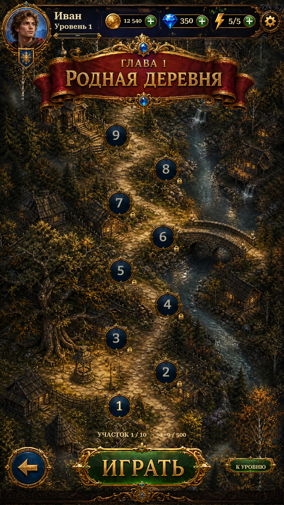

Maps — interaction and route spacing R4Maps · press feedback, round entry and spacing
Visible pressed shading on both maps. Available rounds open the existing story/pre-level flow. Locked messages use the original navy-and-gold panel style. Narrower horizontal staggering and greater vertical spacing show nine rounds at rest.
Actual Unity captures, isolated test saves. 35 targeted Unity checks passed. Held-state images show temporary button shading, not new locked states. The notice fades after 3.5 seconds and does not block input.
